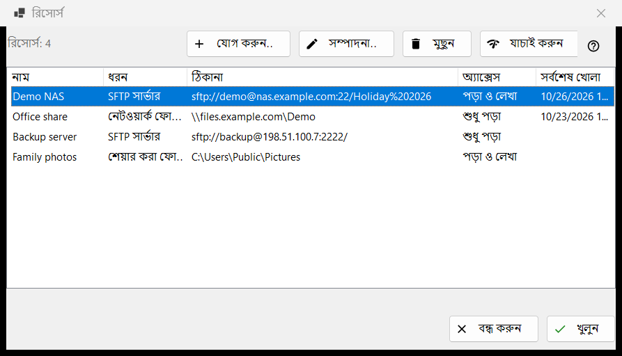
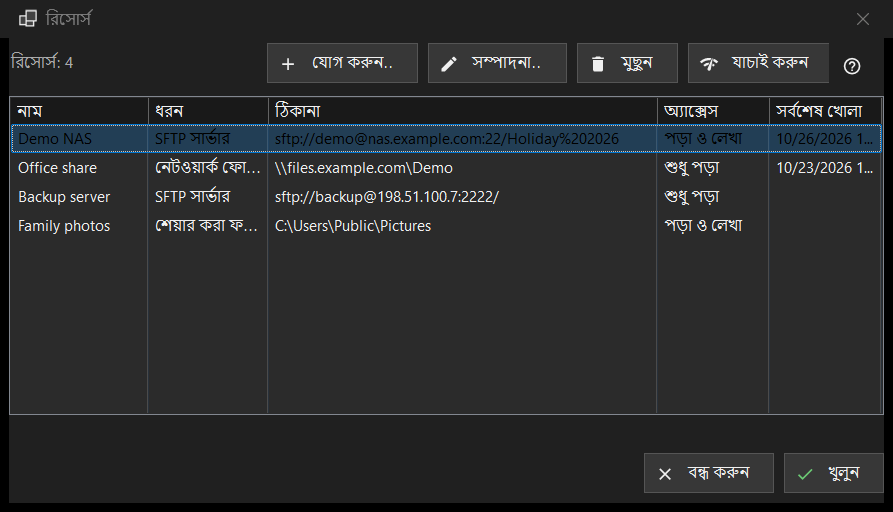

রিসোর্স
এটি কীসের জন্য
সার্ভার ও নেটওয়ার্ক ফোল্ডারের যে তালিকা ভিউয়ার খুলতে পারে: SFTP সার্ভার, Windows নেটওয়ার্ক ফোল্ডার (SMB) এবং যে ফোল্ডারগুলো Share Manager এই কম্পিউটার থেকে শেয়ার করে। এটি ফোল্ডার মেনুর রিসোর্স পরিচালনা.. কমান্ড থেকে খোলে; একই তালিকা সেটিংস উইন্ডোর সার্ভার ও রিসোর্স পাতাতেও আছে।


এই ক্রমে
- যোগ করুন.. বোতাম চেপে সার্ভারের তথ্য পূরণ করুন, অথবা আরও বোতাম দিয়ে একটি সেটিংস ফাইল আনুন।
- নতুন সারিটি বেছে নিয়ে যাচাই করুন চাপুন।
- খুলুন চাপুন, অথবা সারিতে ডাবল-ক্লিক করুন: ভিউয়ার সংযুক্ত হয়ে সার্ভারের ফোল্ডার দেখায়।
- ঠিকানা বা পাসওয়ার্ড বদলাতে সম্পাদনা করুন.. এবং কোনো রিসোর্স ভুলে যেতে মুছুন ব্যবহার করুন।
উপাদানসমূহ
তালিকা
কলাম: নাম, ধরন, ঠিকানা, অ্যাক্সেস এবং সর্বশেষ খোলা। ধরন হলো SFTP সার্ভার, নেটওয়ার্ক ফোল্ডার (SMB) বা শেয়ার করা ফোল্ডার (Share Manager); অ্যাক্সেসে লেখা থাকে শুধু পড়া বা পড়া ও লেখা। তালিকার নিচের একটি লাইন রিসোর্স গোনে, আর কোনো রিসোর্স না থাকলে উইন্ডো একটি ইঙ্গিত এবং একটি যোগ করুন.. বোতাম দেখায়। সম্পাদনা করুন.., মুছুন ও যাচাই করুন বোতামের (এবং রিসোর্স উইন্ডোর নিচের সারিতে খুলুন বোতামের) জন্য একটি নির্বাচিত সারি দরকার; তার আগে তাদের টুলটিপে লেখা থাকে: তালিকা থেকে প্রথমে একটি রিসোর্স নির্বাচন করুন
যোগ করুন.. ও সম্পাদনা করুন..
যোগ করুন.. নতুন রিসোর্সের ফর্ম খোলে এবং সম্পাদনা করুন.. নির্বাচিত রিসোর্সের ফর্ম। সেখানে লেখা পাসওয়ার্ড আপনার Windows অ্যাকাউন্টের জন্য এনক্রিপ্ট করে রাখা হয়, তালিকায় কখনোই নয়।
মুছুন
মুছুন আগে জিজ্ঞেস করে, আর ডিফল্ট উত্তর না। প্রশ্নে রিসোর্সের নাম থাকে এবং বলা হয় যে তার জন্য সংরক্ষিত পাসওয়ার্ডও চলে যাবে, আর সার্ভারের ফাইল প্রভাবিত হয় না।
যাচাই করুন
যাচাই করুন নির্বাচিত সারিটি না খুলেই পরীক্ষা করে। SFTP সার্ভারের জন্য এটি রিসোর্সের প্রতিটি জানা ঠিকানা চেষ্টা করে এবং প্রতিটির রিপোর্ট দেয় host:port আকারে, একটি রায়সহ: একটিও সজীব SSH উত্তর যাচাইকে সফল করে, খোলা পোর্ট যা SSH নয় সেটি সতর্কতা, আর নীরবতা ব্যর্থতা। কোনো পাসওয়ার্ড পাঠানো হয় না। নেটওয়ার্ক ফোল্ডারের জন্য এটি সংরক্ষিত পাসওয়ার্ড দিয়ে শেয়ারটি খোলে এবং তার উপরের ফোল্ডার পড়ে; পাসওয়ার্ড সংরক্ষিত না থাকলে এটি সম্পাদনা করুন.. দিয়ে একটি দিতে বলে। Share Manager সারির জন্য এটি শুধু দেখে ফোল্ডারটি এই কম্পিউটারে আছে কি না।
খুলুন
খুলুন, অথবা সারিতে ডাবল-ক্লিক, রিসোর্সটি ভিউয়ারের হাতে দেয়, যা সংযুক্ত হয়ে তার ফোল্ডার দেখায়। পাসওয়ার্ড সংরক্ষিত না থাকলে, বা সংরক্ষিতটি প্রত্যাখ্যাত হলে, আগে একটি ছোট উইন্ডো সেটি চায়।